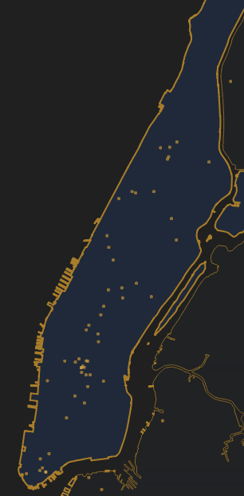
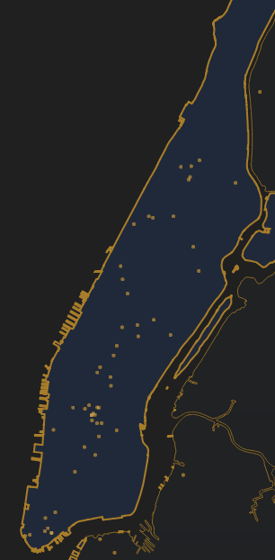
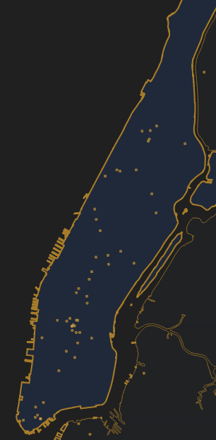

test gif
 

From 2009 onwards, according to Local Law 84 (of the city of New York) buildings over 50,000 ft2 have to be benchmarked based on their yearly energy and water consumption. This data is then gathered and is also made available through NYC’s open-data portal.
